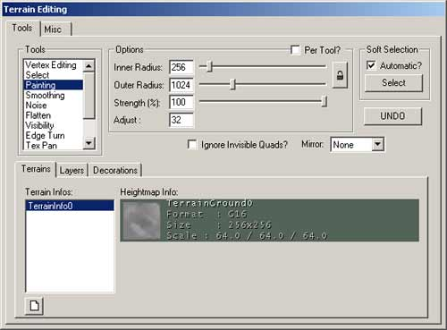

UDN
Search public documentation:
TerrainTutorialKR
English Translation
日本語訳
Interested in the Unreal Engine?
Visit the Unreal Technology site.
Looking for jobs and company info?
Check out the Epic games site.
Questions about support via UDN?
Contact the UDN Staff
日本語訳
Interested in the Unreal Engine?
Visit the Unreal Technology site.
Looking for jobs and company info?
Check out the Epic games site.
Questions about support via UDN?
Contact the UDN Staff
터레인
문서 요약: 터레인 문서들의 목차 문서 변경 내역: 문서를 분할하고 2110 빌드에 대해 업데이트하기 위해 Jason Lentz(DemiurgeStudios?) 가 최종 업데이트 함. 원저자: Jason Lentz(DemiurgeStudios?)개요
터레인 튜토리얼에 오신 것을 환영합니다. 본 문서는 테레인 작성 및 수정 방법을 별도의 섹션에서 각각 설명합니다. 이 섹션은 테레인의 초기 제작에서 디테일을 추가하고 마무리 다듬질을 하는 섹션별로 정리되어 있습니다. 직접 페이지로 이동하려면 다음 링크 중 한개를 클릭하십시오.- CreatingTerrain (터레인 만들기)
- EditingTerrainMaps (터레인 맵 편집하기)
- EditingTerrainLayers (터레인 레이어 편집하기)
- CreatingDecoLayers (장식 레이어 만들기)
- AdditionalTerrainTips (추가 터레인 도움말)
터레인 만들기

본 섹션은 빈 레벨에서 시작하여 테레인을 만드는 방법에 대해 설명합니다. 본 문서의 하위 섹션은 다음과 같습니다. 터레인 만들기- 터레인용 맵 준비하기
- 기본 터레인 만들기
- TerrainMap
- 텍스처 추가하기
- 터레인 생성기
터레인 맵 편집하기
 본 섹션은 TerrainMap 을 수정하기 위한 Terrain Editor 에 있는 여러 도구의 사용 방법에 대해 설명합니다. 다음 도구에 대해 자세히 설명됩니다.
터레인 맵 편집
본 섹션은 TerrainMap 을 수정하기 위한 Terrain Editor 에 있는 여러 도구의 사용 방법에 대해 설명합니다. 다음 도구에 대해 자세히 설명됩니다.
터레인 맵 편집 - 정점 편집 도구
- 선택 도구
- 페인트 도구
- 다듬기 (smoothing) 도구
- 노이즈 도구
- 플랫 도구
- 가시성 (visibility) 도구
- 가장자리 (edge) 회전 도구
터레인 레이어 편집하기
 본 섹션은 TerrainMap 이 무엇이고 레벨에서 어떻게 표시되는지에 대한 자세한 설명히 포함됩니다. 또한 테레인에서 개별 레이어를 만들거나 수정하는 방법에 대해 설명합니다. 다음은 본 문서내에서 찾을 수 있는 구체적인 섹션입니다.
터레인 레이어 편집하기
본 섹션은 TerrainMap 이 무엇이고 레벨에서 어떻게 표시되는지에 대한 자세한 설명히 포함됩니다. 또한 테레인에서 개별 레이어를 만들거나 수정하는 방법에 대해 설명합니다. 다음은 본 문서내에서 찾을 수 있는 구체적인 섹션입니다.
터레인 레이어 편집하기 - TerrainInfo
- 레이어 계층
- 레이어
- 새 레이어 만들기
- 레이어 속성
- TextureMap 축
- 터레인 편집 도구를 사용하여 AlphaMaps 편집하기
- 모조 DisplacementMaps
DecoLayers 만들기
 여기에서는 고유 DecoLayers 를 만드는 방법에 대해 배워보겠습니다. 이러한 것들은 임의적이지만 제어된 StaticMeshes 로 재빠르게 맵을 채우는데 유용합니다. 문서의 대부분은 각각의 속성과 사용 방법을 설명하는 것에 촛점을 맞추고 있습니다. 아래는 본 문서는 주요 섹션들입니다.
장식 레이어 만들기
여기에서는 고유 DecoLayers 를 만드는 방법에 대해 배워보겠습니다. 이러한 것들은 임의적이지만 제어된 StaticMeshes 로 재빠르게 맵을 채우는데 유용합니다. 문서의 대부분은 각각의 속성과 사용 방법을 설명하는 것에 촛점을 맞추고 있습니다. 아래는 본 문서는 주요 섹션들입니다.
장식 레이어 만들기 - DecoLayer 만들기
- DecoLayer 속성
- AlignToTerrain (터레인 배치)
- ColorMap (컬러 맵)
- DensityMap (밀도 맵)
- DensityMultiplier (밀도 배율기)
- DisregardTerrainLighting (터레인 조명 무시)
- DrawOrder (그리기 순서)
- FadeOutRadius (페이드 아웃 반경)
- LitDirectional (Lit 방향성)
- MaxPerQuad (Quad 당 최대)
- RandomYaw (무작위 Yaw)
- ScaleMap (스케일 맵)
- ScaleMultiplier (스케일 배율기)
- Seed (시드)
- ShowOnInvisibleTerrain (터레인 감추기)
- ShowOnTerrain (터레인 보이기)
- StaticMesh (정적 메쉬)
추가 터레인 도움말
 ==>
==>  본 문서에는 테레인 효율성뿐만 아니라 모습을 크게 향상시킬 수 있는 여러 방법이 포함되어 있습니다. 모든 설명이 테레인 편집 도구에 관한 것은 아니지만 최상의 테레인를 제작하는데 도움이 될 것입니다. 다음은 본 문서에서 찾을 수 있는 섹션의 일부입니다.
추가 터레인 도움말
본 문서에는 테레인 효율성뿐만 아니라 모습을 크게 향상시킬 수 있는 여러 방법이 포함되어 있습니다. 모든 설명이 테레인 편집 도구에 관한 것은 아니지만 최상의 테레인를 제작하는데 도움이 될 것입니다. 다음은 본 문서에서 찾을 수 있는 섹션의 일부입니다.
추가 터레인 도움말 - 맵 저장 및 테스트하기
- 터레인 통계
- SkyBox 추가하기
- SunLight 추가하기
- DistanceFog
- 여러 TerrainInfos 및 여러 영역